第一节 · 楔子
孙悟空护送唐僧西天取经，历经八十一难。一路上碰到了各种各样的妖怪。这一回，形形色色的函数，就是我们取经路上的妖怪。 它们有的平缓，有的陡峭；有的一路上升，有的起伏不定。
我们的目标，是学习研究函数性质的方法：看清它们怎样变化，判断它们何时增大、何时减小，寻找它们能够取到的最大值和最小值。摸清这些性质，才能做到“知己知彼，百战不殆”。
第二节 · 导数与微分
我们熟悉的最简单的一类函数，是线性函数：
y=kx+b.
它的图像是一条直线。如下图，线性函数有一个重要性质：无论从哪里出发，自变量改变 \displaystyle\Delta x，函数值的改变量总是 \displaystyle\Delta y=k\Delta x。因此，当 \displaystyle\Delta x\ne0 时，比值 \displaystyle\frac{\Delta y}{\Delta x}=k 始终不变。这个比值就是直线的斜率，刻画了自变量的改变量与函数值的改变量之间的比例关系。
如果我们把自变量的改变量 \displaystyle\Delta x 看作一笔投资（“投桃”），把函数值的改变量 \displaystyle\Delta y 看作相应的回报（“报李”），那么在线性函数中，“投桃”与“报李”有着固定的比例。
对于一般函数，“桃”和“李”的关系就没有这么简单了。我们来看一个例子。取 \displaystyle f(x)=x^2，考察它在 \displaystyle x_0=1 处的变化。此时，\displaystyle\Delta y 与 \displaystyle\Delta x 的比值 \displaystyle\frac{\Delta y}{\Delta x} 就是图中割线 \displaystyle PQ 的斜率。拖动下面的滑块，可以看到，\displaystyle\frac{\Delta y}{\Delta x} 会随 \displaystyle\Delta x 的取值变化。原因很直观：\displaystyle f 的图像是一条曲线，已经不是直线了。
但事情并非不可挽回。想象我们也能像孙悟空一样，变小、变小、再变小，进入一个微观世界。这时候，处于微观世界的我们，会感觉周围的函数图像几乎就是一条直线（就像我们日常感觉地面是平的，道理相似）。在局部用直线近似曲线的变化，这种“化曲为直”的思想就是微分的直观。

那么，在这个微观世界里，我们所感受到的这条直线如何确定呢？首先，它应当经过曲线上的点 \displaystyle(x_0,f(x_0))；其次，它的斜率 \displaystyle k 应当由比值 \displaystyle\frac{\Delta y}{\Delta x} 在 \displaystyle\Delta x\to0 时的极限来确定。由此确定的直线，恰好是函数 \displaystyle f 的图像在 \displaystyle x_0 处的切线。
若比值 \displaystyle\frac{\Delta y}{\Delta x} 在 \displaystyle\Delta x\to0 时的极限存在且有限，就称函数 \displaystyle f 在 \displaystyle x_0 处可导。我们把这个极限定义为函数 \displaystyle f 在 \displaystyle x_0 处的导数，记为
\begin{aligned} f'(x_0)&=\lim_{\Delta x\to0}\frac{\Delta y}{\Delta x}\\ &=\lim_{\Delta x\to0}\frac{f(x_0+\Delta x)-f(x_0)}{\Delta x}. \end{aligned}
在图像上，导数就是该点处切线的斜率。
根据导数的定义，求函数 \displaystyle g(x)=2x-1 在 \displaystyle x_0=1 处的导数。
先求出 \displaystyle g(1+\Delta x)-g(1)，再代入导数的定义。
\begin{aligned} g'(1)&=\lim_{\Delta x\to0}\frac{g(1+\Delta x)-g(1)}{\Delta x}\\ &=\lim_{\Delta x\to0}\frac{2\Delta x}{\Delta x}\\ &=\lim_{\Delta x\to0}2=2. \end{aligned}
根据导数的定义，求函数 \displaystyle f(x)=x^2 在 \displaystyle x_0=1 处的导数。
展开 \displaystyle(1+\Delta x)^2，约去分子、分母的公共因子 \displaystyle\Delta x，再求极限。
\begin{aligned} f'(1)&=\lim_{\Delta x\to0}\frac{f(1+\Delta x)-f(1)}{\Delta x}\\ &=\lim_{\Delta x\to0}\frac{(1+\Delta x)^2-1}{\Delta x}\\ &=\lim_{\Delta x\to0}\frac{2\Delta x+(\Delta x)^2}{\Delta x}\\ &=\lim_{\Delta x\to0}(2+\Delta x)=2. \end{aligned}
在微观世界中，我们引入 \displaystyle dx、\displaystyle dy，分别表示自变量与函数值的微小改变量，称为微分（differential）。这样，微观世界中“化曲为直”的几何直观，就可以表示为线性关系：
dy=f'(x_0)\,dx.
相应地，我们也经常用下面的记号表示函数在 \displaystyle x_0 处的导数：
\left.\frac{dy}{dx}\right|_{x=x_0}=f'(x_0).
微分符号 \displaystyle dx、\displaystyle dy 由莱布尼茨创立，表示无穷小量（infinitesimals）。注意，\displaystyle dx 与 \displaystyle\Delta x 的含义不同：我们可以取 \displaystyle\Delta x=0.01 为一个确定的有限数，但这里表示无穷小变化的 \displaystyle dx 不能取为 \displaystyle0.01。曾经，微观世界与宏观世界之间隔着一道难以逾越的鸿沟。正是极限的引入，为我们架起了一座微观与宏观之间的桥梁。
第三节 · 导函数
上一节，我们介绍了函数 \displaystyle f 在给定一点 \displaystyle x_0 处的导数。
若 \displaystyle f 在一个开区间内每一点都可导，就把 \displaystyle x\mapsto f'(x) 称为它的导函数，也常简称导数。当 \displaystyle y=f(x) 时，也把 \displaystyle f'(x) 记作 \displaystyle y'。
注： \displaystyle f'(x_0) 是一个点处的数值；\displaystyle f'(x) 是随位置变化的函数。
求函数 \displaystyle f(x) = x^2 的导函数。
代入导数定义，对一般的 \displaystyle x 展开并化简，令 \displaystyle \Delta x \to 0。
\begin{align*} f'(x) &= \lim_{\Delta x\to 0} \frac{(x+\Delta x)^2 - x^2}{\Delta x}\\ &= \lim_{\Delta x\to 0} \frac{2x\Delta x + \Delta x^2}{\Delta x} \\ &= \lim_{\Delta x\to 0} (2x + \Delta x) = 2x. \end{align*}
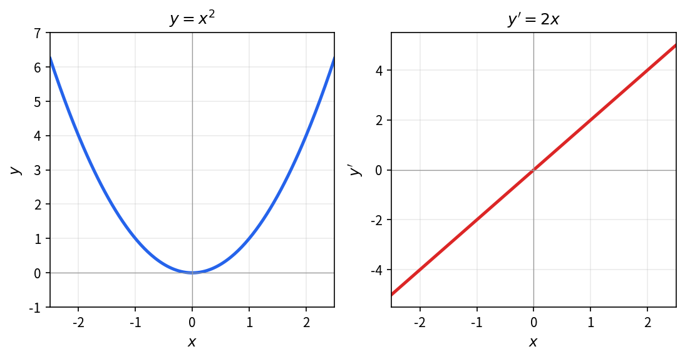
根据定义，求函数 \displaystyle f(x)=\sqrt{x} 的导函数，其中 \displaystyle x>0。
把差商的分子、分母同乘 \displaystyle\sqrt{x+\Delta x}+\sqrt{x}，进行有理化。
由导数的定义，
\begin{aligned} f'(x) &=\lim_{\Delta x\to0}\frac{\sqrt{x+\Delta x}-\sqrt{x}}{\Delta x}\\ &=\lim_{\Delta x\to0}\frac1{\sqrt{x+\Delta x}+\sqrt{x}}\\ &=\frac1{2\sqrt{x}}. \end{aligned}
根据定义，求函数 \displaystyle f(x)=\frac1x 的导函数，其中 \displaystyle x\ne0。
先将 \displaystyle\frac1{x+\Delta x}-\frac1x 通分，再约去差商中的公共因子 \displaystyle\Delta x。
由导数的定义，
\begin{aligned} f'(x) &=\lim_{\Delta x\to0}\frac{\frac1{x+\Delta x}-\frac1x}{\Delta x}\\ &=\lim_{\Delta x\to0}\frac{-\Delta x}{x(x+\Delta x)\,\Delta x}\\ &=\lim_{\Delta x\to0}\frac{-1}{x(x+\Delta x)}\\ &=-\frac1{x^2}. \end{aligned}
下面这些常用的求导公式，都可以通过导数的定义得到。
| 函数 | 导数 | 条件 |
|---|---|---|
| \displaystyle C | \displaystyle0 | \displaystyle C 为常数 |
| \displaystyle x^m | \displaystyle mx^{m-1} | 一般实数 \displaystyle m，取 \displaystyle x>0 |
| \displaystyle\sin x | \displaystyle\cos x | \displaystyle x\in\mathbb R |
| \displaystyle\cos x | \displaystyle-\sin x | \displaystyle x\in\mathbb R |
| \displaystyle e^x | \displaystyle e^x | \displaystyle x\in\mathbb R |
| \displaystyle a^x | \displaystyle a^x\ln a | \displaystyle a>0 |
| \displaystyle\ln x | \displaystyle\frac1x | \displaystyle x>0 |
| \displaystyle\log_a x | \displaystyle\frac1{x\ln a} | \displaystyle x>0,\ a>0,\ a\ne1 |
根据定义，推导公式 \displaystyle(C)'=0，其中 \displaystyle C 为常数。
常数函数在两个位置的函数值相同。
由导数的定义，
(C)'=\lim_{\Delta x\to0}\frac{C-C}{\Delta x}=0.
常数函数的函数值不变，图像是一条水平直线，斜率为零。
根据定义，推导公式 \displaystyle(\sin x)'=\cos x。
用和角公式展开 \displaystyle\sin(x+\Delta x)，再用上一回的正弦极限。
由上一回的重要极限，
\lim_{\Delta x\to0}\frac{\sin\Delta x}{\Delta x}=1.
又因为
\frac{\cos\Delta x-1}{\Delta x} =-\frac{\sin\Delta x}{\Delta x} \frac{\sin\Delta x}{1+\cos\Delta x},
所以 \displaystyle\lim_{\Delta x\to0}\frac{\cos\Delta x-1}{\Delta x}=0。
用和角公式展开，再取极限：
\begin{aligned} (\sin x)' &=\lim_{\Delta x\to0}\frac{\sin(x+\Delta x)-\sin x}{\Delta x}\\ &=\sin x\lim_{\Delta x\to0}\frac{\cos\Delta x-1}{\Delta x}\\ &\quad+\cos x\lim_{\Delta x\to0}\frac{\sin\Delta x}{\Delta x}\\ &=\sin x\cdot0+\cos x\cdot1\\ &=\cos x. \end{aligned}
根据定义，推导公式 \displaystyle(\cos x)'=-\sin x。
用和角公式展开 \displaystyle\cos(x+\Delta x)，再用前一例中的两个极限。
由和角公式和前一例的两个极限，
\begin{aligned} (\cos x)' &=\lim_{\Delta x\to0}\frac{\cos(x+\Delta x)-\cos x}{\Delta x}\\ &=\cos x\lim_{\Delta x\to0}\frac{\cos\Delta x-1}{\Delta x}\\ &\quad-\sin x\lim_{\Delta x\to0}\frac{\sin\Delta x}{\Delta x}\\ &=\cos x\cdot0-\sin x\cdot1\\ &=-\sin x. \end{aligned}
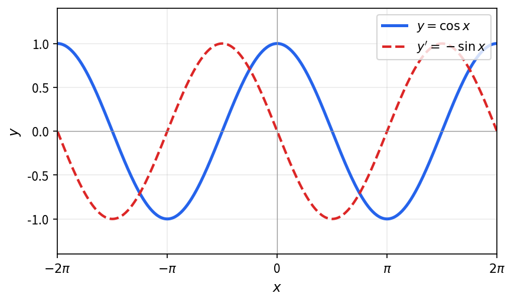
根据定义，推导公式 \displaystyle(\ln x)'=\frac1x，其中 \displaystyle x>0。
令 \displaystyle u=\frac{\Delta x}{x}，把对数之差化为 \displaystyle\ln(1+u)，再联系上一回与 \displaystyle e 有关的重要极限。
先对上一回的重要极限取自然对数，得到
\lim_{u\to0}\frac{\ln(1+u)}u =\ln e=1.
- 换元：令 \displaystyle u=\frac{\Delta x}{x}。固定 \displaystyle x>0 时，\displaystyle\Delta x\to0 对应 \displaystyle u\to0，且 \displaystyle\Delta x=xu。
于是，由导数的定义，
\begin{aligned} (\ln x)' &=\lim_{\Delta x\to0}\frac{\ln(x+\Delta x)-\ln x}{\Delta x}\\ &=\frac1x\lim_{u\to0}\frac{\ln(1+u)}u\\ &=\frac1x. \end{aligned}
根据定义，推导公式 \displaystyle(e^x)'=e^x。
先提出 \displaystyle e^x，再令 \displaystyle u=e^{\Delta x}-1，把剩下的极限转化为前一例的对数极限。
- 换元：令 \displaystyle u=e^{\Delta x}-1。当 \displaystyle\Delta x\to0 时，\displaystyle u\to0，且 \displaystyle\Delta x=\ln(1+u)。
由前一例的对数极限，
\lim_{\Delta x\to0}\frac{e^{\Delta x}-1}{\Delta x} =\lim_{u\to0}\frac{u}{\ln(1+u)}=1.
因此，
\begin{aligned} (e^x)' &=\lim_{\Delta x\to0}\frac{e^{x+\Delta x}-e^x}{\Delta x}\\ &=e^x\lim_{\Delta x\to0}\frac{e^{\Delta x}-1}{\Delta x}\\ &=e^x. \end{aligned}
根据定义，推导公式 \displaystyle(x^m)'=mx^{m-1}，其中 \displaystyle m 为实数，\displaystyle x>0。
先提出 \displaystyle x^m，令 \displaystyle u=\frac{\Delta x}{x}，再把 \displaystyle(1+u)^m 写成 \displaystyle e^{m\ln(1+u)}。
当 \displaystyle m=0 时，函数为常数，公式成立。以下设 \displaystyle m\ne0。
- 第一次换元：令 \displaystyle u=\frac{\Delta x}{x}。当 \displaystyle\Delta x\to0 时，\displaystyle u\to0，且 \displaystyle x+\Delta x=x(1+u)。
- 第二次换元：令 \displaystyle q=m\ln(1+u)。当 \displaystyle u\to0 时，\displaystyle q\to0，且 \displaystyle(1+u)^m=e^q。
借助前面得到的两个极限，
\begin{aligned} &\lim_{u\to0}\frac{(1+u)^m-1}{u}\\ &\quad=m\lim_{u\to0}\left( \frac{e^q-1}{q}\frac{\ln(1+u)}u\right)\\ &\quad=m\cdot1\cdot1=m. \end{aligned}
于是，
\begin{aligned} (x^m)' &=\lim_{\Delta x\to0}\frac{(x+\Delta x)^m-x^m}{\Delta x}\\ &=x^{m-1}\lim_{u\to0}\frac{(1+u)^m-1}{u}\\ &=mx^{m-1}. \end{aligned}
第四节 · 导数的计算—四则运算
下面四条法则都可以从导数的定义推导出来（设 \displaystyle f,g 在所考察的点可导，\displaystyle c 为常数）。
[f(x)\pm g(x)]'=f'(x)\pm g'(x).
由导数的定义和极限的四则运算，
\begin{aligned} &[f(x)\pm g(x)]'\\ &=\lim_{\Delta x\to0} \frac{[f(x+\Delta x)\pm g(x+\Delta x)]-[f(x)\pm g(x)]}{\Delta x}\\ &=\lim_{\Delta x\to0}\frac{f(x+\Delta x)-f(x)}{\Delta x} \pm\lim_{\Delta x\to0}\frac{g(x+\Delta x)-g(x)}{\Delta x}\\ &=f'(x)\pm g'(x). \end{aligned}
[cf(x)]'=cf'(x).
由导数的定义，
\begin{aligned} [cf(x)]' &=\lim_{\Delta x\to0} \frac{cf(x+\Delta x)-cf(x)}{\Delta x}\\ &=c\lim_{\Delta x\to0} \frac{f(x+\Delta x)-f(x)}{\Delta x}\\ &=cf'(x). \end{aligned}
[f(x)g(x)]'=f'(x)g(x)+f(x)g'(x).
因为 \displaystyle f 在 \displaystyle x 处可导，
\begin{aligned} \lim_{\Delta x\to0}f(x+\Delta x) &=f(x)+\lim_{\Delta x\to0}\left[ \Delta x\,\frac{f(x+\Delta x)-f(x)}{\Delta x}\right]\\ &=f(x)+0\cdot f'(x)=f(x). \end{aligned}
由导数的定义，在差商的分子中加减同一项 \displaystyle f(x+\Delta x)g(x)，得到
\begin{aligned} &[f(x)g(x)]'\\ &=\lim_{\Delta x\to0} \frac{f(x+\Delta x)g(x+\Delta x)-f(x)g(x)}{\Delta x}\\ &=\lim_{\Delta x\to0}\left[ f(x+\Delta x)\frac{g(x+\Delta x)-g(x)}{\Delta x} +g(x)\frac{f(x+\Delta x)-f(x)}{\Delta x}\right]\\ &=f(x)g'(x)+g(x)f'(x)\\ &=f'(x)g(x)+f(x)g'(x). \end{aligned}
使用除法法则时，还要求分母不为零，即 \displaystyle g(x)\ne0。
\left[\frac{f(x)}{g(x)}\right]' =\frac{f'(x)g(x)-f(x)g'(x)}{[g(x)]^2}.
因为 \displaystyle g 在 \displaystyle x 处可导，
\begin{aligned} \lim_{\Delta x\to0}g(x+\Delta x) &=g(x)+\lim_{\Delta x\to0}\left[ \Delta x\,\frac{g(x+\Delta x)-g(x)}{\Delta x}\right]\\ &=g(x)+0\cdot g'(x)=g(x). \end{aligned}
又因 \displaystyle g(x)\ne0，当 \displaystyle\Delta x 充分小时，\displaystyle g(x+\Delta x) 也不为零。由导数的定义，先通分，再整理分子：
\begin{aligned} &\left[\frac{f(x)}{g(x)}\right]'\\ &=\lim_{\Delta x\to0} \frac{\frac{f(x+\Delta x)}{g(x+\Delta x)}-\frac{f(x)}{g(x)}}{\Delta x}\\ &=\lim_{\Delta x\to0} \frac{f(x+\Delta x)g(x)-f(x)g(x+\Delta x)} {\Delta x\,g(x+\Delta x)g(x)}\\ &=\lim_{\Delta x\to0} \frac{g(x)\frac{f(x+\Delta x)-f(x)}{\Delta x} -f(x)\frac{g(x+\Delta x)-g(x)}{\Delta x}} {g(x+\Delta x)g(x)}\\ &=\frac{g(x)f'(x)-f(x)g'(x)}{[g(x)]^2}\\ &=\frac{f'(x)g(x)-f(x)g'(x)}{[g(x)]^2}. \end{aligned}
求函数 \displaystyle y = 3x^3 - 4x^2 + 5x - 9 的导数。
对多项式逐项求导，利用幂函数求导公式 \displaystyle (x^n)' = nx^{n-1} 和常数的导数为零。
\begin{align*} y' &= (3x^3)' - (4x^2)' + (5x)' - (9)' \\ &= 3 \cdot 3x^{3-1} - 4 \cdot 2x^{2-1} + 5 \cdot 1x^{1-1} - 0\\ &= 9x^2 - 8x + 5. \end{align*}
求函数 \displaystyle y = 2e^{x}(\sin x + 2\cos x) 的导数。
把 \displaystyle 2e^x 和 \displaystyle (\sin x + 2\cos x) 看作两个因子，应用乘积法则 \displaystyle (uv)' = u'v + uv'。
\begin{align*} y' &= (2e^{x})'(\sin x + 2\cos x) + 2e^{x}(\sin x + 2\cos x)' \\ &= 2e^{x}(\sin x + 2\cos x) + 2e^{x}(\cos x - 2\sin x) \\ &= 2e^{x}\sin x + 4e^{x}\cos x + 2e^{x}\cos x - 4e^{x}\sin x \\ &= 6e^{x}\cos x - 2e^{x}\sin x \\ &= 2e^{x}(3\cos x - \sin x). \end{align*}
求函数 \displaystyle f(x) = x^3 + 3\sin x + \dfrac{5}{2} 的导函数 \displaystyle f'(x) 及 \displaystyle f'\!\left(\dfrac{\pi}{4}\right)。
逐项求导后代入 \displaystyle x = \dfrac{\pi}{4}。
\begin{align*} f'(x) &= (x^3)' + (3\sin x)' + \left( \frac{5}{2} \right)' \\ &= 3x^2 + 3\cos x. \end{align*}
代入 \displaystyle x = \dfrac{\pi}{4}：
f'\!\left( \frac{\pi}{4} \right) = 3\left(\frac{\pi}{4}\right)^2 + 3\cos\frac{\pi}{4} = \frac{3\pi^2}{16} + \frac{3\sqrt{2}}{2}.
求函数 \displaystyle y = \tan x 的导数。
将 \displaystyle \tan x = \dfrac{\sin x}{\cos x} 写成商的形式，再应用商法则。
\begin{align*} y' &= \left( \frac{\sin x}{\cos x} \right)' \\ &= \frac{(\sin x)' \cos x - \sin x (\cos x)'}{\cos^2 x} \\ &= \frac{\cos^2 x + \sin^2 x}{\cos^2 x} = \frac{1}{\cos^2 x}. \end{align*}
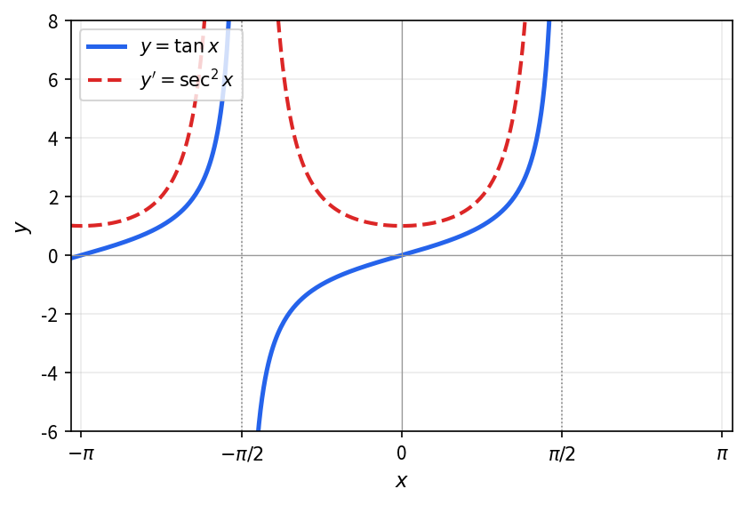
第五节 · 导数的计算—链式法则
对于复合函数的求导，有一个非常重要的公式，它把求导过程一层层展开计算，被形象地称为链式法则。
若 \displaystyle u=g(x) 在所考察的点可导，且 \displaystyle y=f(u) 在对应的 \displaystyle u 处可导，则
\boxed{[f(g(x))]'=f'(g(x))g'(x).}
例如 \displaystyle[\sin(x^2)]'=\cos(x^2)\cdot2x。先辨清外层与内层，再分别求导。
\frac{dy}{dx}=\frac{dy}{du}\frac{du}{dx}.
设函数 \displaystyle y=e^{x^2}，求 \displaystyle y'。
外层是指数函数，内层是平方函数；分别求导，再相乘。
令 \displaystyle f(u)=e^u、\displaystyle g(x)=x^2，则 \displaystyle y=f(g(x))。分别求导，得到 \displaystyle f'(u)=e^u、\displaystyle g'(x)=2x。由链式法则，
y'=f'(g(x))g'(x)=e^{x^2}\cdot2x=2xe^{x^2}.
设函数 \displaystyle y=\cos\frac{x^2-1}{3x}，求 \displaystyle y'。
外层是余弦函数，内层是分式；先用商法则求内层的导数。
令 \displaystyle f(u)=\cos u、\displaystyle g(x)=\frac{x^2-1}{3x}，则 \displaystyle y=f(g(x))。分别求导：
f'(u)=-\sin u,\qquad g'(x)=\frac{(2x)(3x)-3(x^2-1)}{9x^2}=\frac{x^2+1}{3x^2}.
由链式法则，
y'=f'(g(x))g'(x)=-\frac{x^2+1}{3x^2}\sin\frac{x^2-1}{3x}.
设 \displaystyle y=\ln(\cos x)，求 \displaystyle y'。
外层是对数函数，内层是余弦函数。
令 \displaystyle f(u)=\ln u、\displaystyle g(x)=\cos x，则 \displaystyle f'(u)=\frac1u、\displaystyle g'(x)=-\sin x。在 \displaystyle\cos x>0 的范围内，由链式法则，
y'=f'(g(x))g'(x)=\frac1{\cos x}(-\sin x)=-\tan x.
设 \displaystyle y=\sqrt{1+3x^3}，求 \displaystyle y'。
把根号写成 \displaystyle\frac12 次幂；外层是幂函数，内层是 \displaystyle1+3x^3。
令 \displaystyle f(u)=u^{\frac12}、\displaystyle g(x)=1+3x^3，则 \displaystyle f'(u)=\frac1{2\sqrt u}、\displaystyle g'(x)=9x^2。在 \displaystyle1+3x^3>0 的范围内，由链式法则，
y'=f'(g(x))g'(x)=\frac{9x^2}{2\sqrt{1+3x^3}}.
设 \displaystyle y=\ln\bigl(\sin(2x^2)\bigr)，求 \displaystyle y'。
由外到内有三层：取对数、取正弦、计算 \displaystyle2x^2。
令 \displaystyle f(u)=\ln u、\displaystyle g(v)=\sin v、\displaystyle h(x)=2x^2，则 \displaystyle y=f(g(h(x)))。分别求导，得到
f'(u)=\frac1u,\qquad g'(v)=\cos v,\qquad h'(x)=4x.
在 \displaystyle\sin(2x^2)>0 的范围内，逐层应用链式法则：
\begin{aligned} y'&=f'(g(h(x)))g'(h(x))h'(x)\\ &=\frac{\cos(2x^2)}{\sin(2x^2)}\cdot4x\\ &=4x\cot(2x^2). \end{aligned}
设 \displaystyle y=e^{\cos\sqrt x}，求 \displaystyle y'。
由外到内有三层：指数函数、余弦函数、平方根函数。
令 \displaystyle f(u)=e^u、\displaystyle g(v)=\cos v、\displaystyle h(x)=\sqrt x，则 \displaystyle y=f(g(h(x)))。当 \displaystyle x>0 时，分别求导：
f'(u)=e^u,\qquad g'(v)=-\sin v,\qquad h'(x)=\frac1{2\sqrt x}.
由链式法则，
\begin{aligned} y'&=f'(g(h(x)))g'(h(x))h'(x)\\ &=e^{\cos\sqrt x}(-\sin\sqrt x)\frac1{2\sqrt x}\\ &=-\frac{e^{\cos\sqrt x}\sin\sqrt x}{2\sqrt x}. \end{aligned}
设 \displaystyle y = \cos 2x \cdot \cos^2 x，求 \displaystyle y'。
用乘积法则求导，对 \displaystyle \cos 2x 和 \displaystyle \cos^2 x 分别求导，最后利用二倍角公式化简。
\begin{aligned} y' &= (\cos 2x)'\cos^2 x + \cos 2x(\cos^2 x)' \\ &= -2\sin 2x\cos^2 x + \cos 2x \cdot (-2\sin x\cos x) \\ &= -2\cos x(\sin 2x\cos x + \cos 2x\sin x) \\ &= -2\cos x\sin 3x. \end{aligned}
（最后一步利用了 \displaystyle \sin(2x + x) = \sin 2x\cos x + \cos 2x\sin x。）
第六节 · 高阶导数
导函数本身也是函数。如果它还可导，求导运算就可以继续下去。
\displaystyle f' 的导数称为二阶导数，记为 \displaystyle f''。继续求导，依次得到 \displaystyle f^{(3)},f^{(4)},\ldots。
设 \displaystyle y = ax^2 + bx + c，求二阶导数 \displaystyle y''。
先对 \displaystyle y 求一阶导数，再对 \displaystyle y' 再次求导。
一阶导数：
y' = 2ax + b.
二阶导数：
y'' = 2a.
求函数 \displaystyle y=\sin x 的二阶导数 \displaystyle y''。
先对 \displaystyle\sin x 求导，再对得到的导函数求一次导数。
依次求导，得到
\begin{aligned} y'&=\cos x,\\ y''&=-\sin x. \end{aligned}
在直线运动中，用 \displaystyle s(t) 表示位移，\displaystyle v(t) 表示速度，\displaystyle a(t) 表示加速度。经过一段时间 \displaystyle\Delta t>0，平均速度与平均加速度分别为
\displaystyle\bar v=\frac{s(t+\Delta t)-s(t)}{\Delta t}=\frac{\Delta s}{\Delta t}
\displaystyle\bar a=\frac{v(t+\Delta t)-v(t)}{\Delta t}=\frac{\Delta v}{\Delta t}
让时间间隔趋于零，得到瞬时速度与瞬时加速度：
\displaystyle v(t)=\lim_{\Delta t\to0}\frac{\Delta s}{\Delta t}=s'(t)
\displaystyle a(t)=\lim_{\Delta t\to0}\frac{\Delta v}{\Delta t}=v'(t)=s''(t)
位移图像的斜率给出速度，速度图像的斜率给出加速度。
位移、速度与加速度的对应关系
| 运动情形 | 位移 | 速度 | 加速度 |
|---|---|---|---|
| 静止 | \displaystyle s(t)=s_0 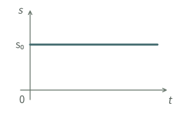 |
\displaystyle v(t)=0 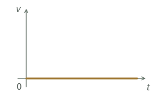 |
\displaystyle a(t)=0 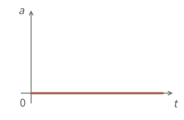 |
| 匀速直线运动\displaystyle v_0>0，初始位置为 \displaystyle0 | \displaystyle s(t)=v_0t 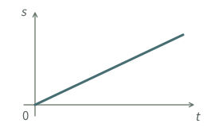 |
\displaystyle v(t)=v_0 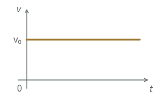 |
\displaystyle a(t)=0 |
| 匀加速直线运动\displaystyle a_0>0，初始位置、初速度均为 \displaystyle0 | \displaystyle
s(t)=\frac12a_0t^2 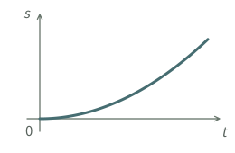 |
\displaystyle v(t)=a_0t 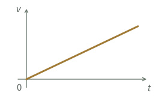 |
\displaystyle a(t)=a_0 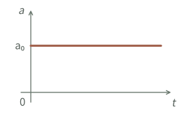 |
| 匀速圆周运动〔注〕半径、角速度均取 \displaystyle1 | \displaystyle\begin{aligned}x(t)&=\cos
t,\\y(t)&=\sin t\end{aligned} 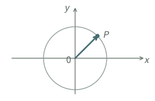 |
\displaystyle\begin{aligned}v_x(t)&=-\sin
t,\\v_y(t)&=\cos t\end{aligned} 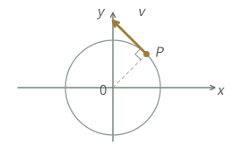 |
\displaystyle\begin{aligned}a_x(t)&=-\cos
t,\\a_y(t)&=-\sin t\end{aligned} 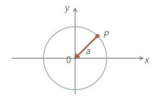 |
注： 圆周运动中，对横、纵坐标分别求导，得到速度的两个分量；再分别求导，得到加速度的两个分量。这里的速率始终为 \displaystyle1，但速度方向不断改变，所以加速度不为零，并且始终指向圆心。
第七节 · 导数与函数的变化
前面，我们把函数图像比作火眼金睛，借助图像看清函数的性质。学会求导以后，我们还可以通过导数深入研究函数的单调性、极值点与凸性。因此，求导也可以看作火眼金睛的升级版。
设 \displaystyle f 在开区间 \displaystyle I 上可导。
- 若区间内部处处有 \displaystyle f'(x)\ge0，则 \displaystyle f 在 \displaystyle I 上单调递增。
- 若区间内部处处有 \displaystyle f'(x)\le0，则 \displaystyle f 在 \displaystyle I 上单调递减。
- 若区间内部处处有 \displaystyle f'(x)=0，则 \displaystyle f 在 \displaystyle I 上为常数。
这里的条件针对整个区间，不能只检查一个点。
讨论函数 \displaystyle y=x+\cos x 在 \displaystyle[0,2\pi] 上的单调性。
求导后判断导数的符号。
函数在整个实数轴上可导，且
y'=1-\sin x\ge0.
所以它在实数轴上单调递增，在 \displaystyle[0,2\pi] 上也单调递增。
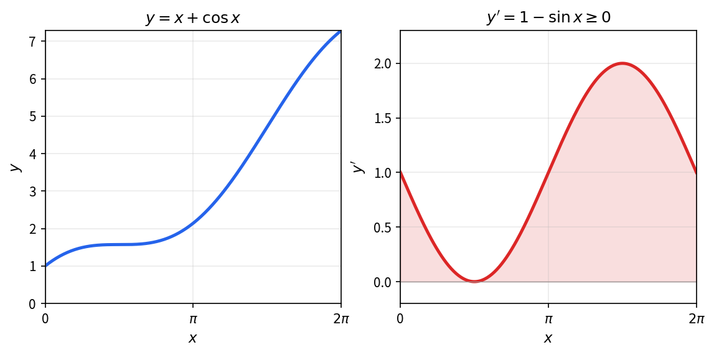
讨论函数 \displaystyle y = e^x - x + 3 的单调性。
求导后，分析 \displaystyle y' = e^x - 1 在 \displaystyle x < 0 和 \displaystyle x \ge 0 时的正负。
对函数求导得：
y' = e^x - 1.
- 当 \displaystyle x < 0 时，\displaystyle y' < 0，故函数在 \displaystyle (-\infty, 0] 上单调递减；
- 当 \displaystyle x \ge 0 时，\displaystyle y' \ge 0，故函数在 \displaystyle [0, +\infty) 上单调递增。
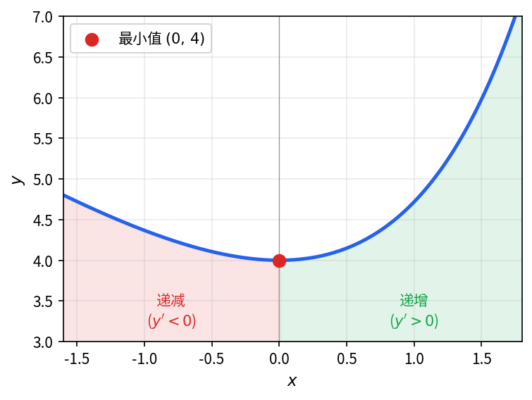
极值
在区间内部的点 \displaystyle c 附近，若所有函数值都满足 \displaystyle f(x)\le f(c)，就称 \displaystyle f(c) 为一个极大值；若都满足 \displaystyle f(x)\ge f(c)，就称 \displaystyle f(c) 为一个极小值。极大值与极小值统称极值，只与附近的函数值比较。
若 \displaystyle f 在区间内部的点 \displaystyle c 可导，并在该点取到极值，则必有 \displaystyle f'(c)=0。
反过来，\displaystyle f'(c)=0 并不保证有极值。例如 \displaystyle f(x)=x^3 在 \displaystyle0 处导数为零，却一直递增。
判断一个候选点，可以看其两侧的导数符号：由正变负，得到极大值；由负变正，得到极小值。
若 \displaystyle f'(c)=0，且 \displaystyle f 在 \displaystyle c 附近二阶可导，还可以用二阶导数判断：
- \displaystyle f''(c)>0：在 \displaystyle c 处取得极小值。
- \displaystyle f''(c)<0：在 \displaystyle c 处取得极大值。
- \displaystyle f''(c)=0：这个判别法不能直接给出结论，需要继续考察函数的变化。
下图都取 \displaystyle c=0。前两图分别给出极小值与极大值；后两图的二阶导数都为零，但 \displaystyle x^4 有极小值，\displaystyle x^3 没有极值。
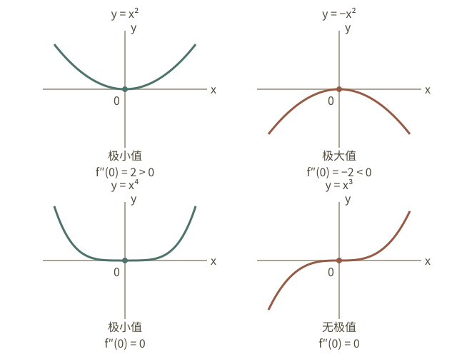
求函数 \displaystyle f(x)=x^4-4x^2 的极值。
令 \displaystyle f'(x)=0 求出候选点，再用二阶导数判断，并计算对应的函数值。
先求导，令
f'(x)=4x^3-8x=4x(x^2-2)=0,
得到三个候选点 \displaystyle x=0,\sqrt2,-\sqrt2。再求导，得到
f''(x)=12x^2-8.
- 在 \displaystyle x=0 处，\displaystyle f''(0)=-8<0，所以 \displaystyle0 是极大值点，对应的极大值为 \displaystyle f(0)=0。
- 在 \displaystyle x=\pm\sqrt2 处，\displaystyle f''(\pm\sqrt2)=16>0，所以 \displaystyle\pm\sqrt2 是两个极小值点，对应的极小值均为 \displaystyle f(\pm\sqrt2)=-4。
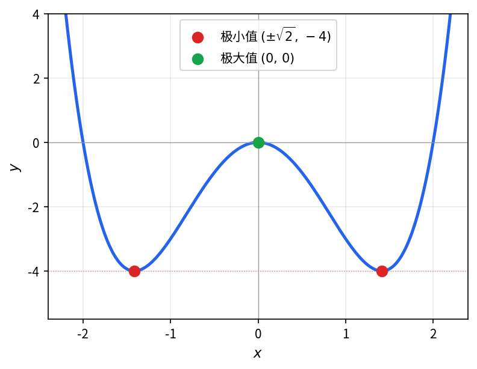
一个函数可能有多个极值点。如果关心整个研究区间上的最大值或最小值，还需要进一步比较判断，不能只看某一个极值点。
凸函数与凹函数
对于一般函数，极值未必是整个研究区间上的最值。但有一类形态特殊的函数，相应的极值就是最值。
若对区间内任意 \displaystyle x_1,x_2 和任意 \displaystyle t\in[0,1]，都有
f(tx_1+(1-t)x_2)\le tf(x_1)+(1-t)f(x_2),
就称 \displaystyle f 为凸函数。
若上面的不等号反向，即
f(tx_1+(1-t)x_2)\ge tf(x_1)+(1-t)f(x_2),
就称 \displaystyle f 为凹函数。
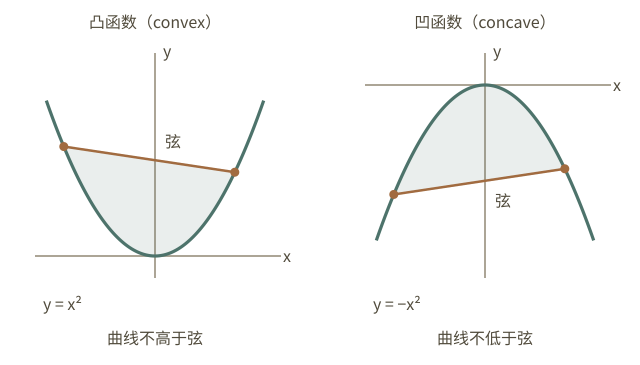
这个公式背后有很强的几何直觉。令 \displaystyle x=tx_1+(1-t)x_2：
- 不等号左边的 \displaystyle f(x)，是曲线在横坐标 \displaystyle x 处的高度。
- 不等号右边的 \displaystyle tf(x_1)+(1-t)f(x_2)，是两点连线在同一横坐标 \displaystyle x 处的高度。
左边小于或等于右边，表示曲线不高于两点连线，这是凸函数的形态；左边大于或等于右边，表示曲线不低于两点连线，这是凹函数的形态。因此，凸函数的曲线位于弦的下方或与它重合；凹函数的曲线位于弦的上方或与它重合。
凸函数的极小值一定是全局最小值；凹函数的极大值一定是全局最大值。
设函数 \displaystyle f 在区间 \displaystyle I 上二阶可导。
- 若在整个区间上都有 \displaystyle f''(x)\ge0，则 \displaystyle f 是凸函数。
- 若在整个区间上都有 \displaystyle f''(x)\le0，则 \displaystyle f 是凹函数。
二阶导数反映斜率怎样变化：斜率逐渐增大，曲线呈凸形；斜率逐渐减小，曲线呈凹形。
判断函数 \displaystyle y = x^2 的凹凸性。
计算二阶导数，根据其符号判断凹凸性。
计算二阶导数：\displaystyle y'' = 2 > 0，故 \displaystyle y = x^2 为凸函数。
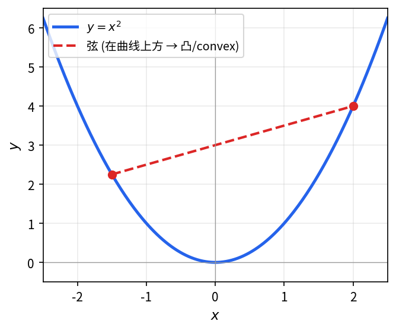
判断函数 \displaystyle y = \ln x（\displaystyle x > 0）的凹凸性。
计算二阶导数，根据其符号判断凹凸性。
计算二阶导数：\displaystyle y'' = -\dfrac{1}{x^2} < 0，故 \displaystyle y = \ln x 为凹函数。
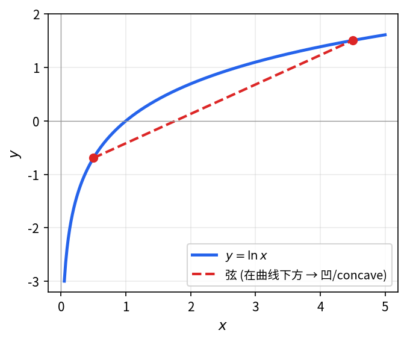
判断函数 \displaystyle f(x)=\frac1x 在 \displaystyle(0,+\infty) 上的凹凸性。
计算二阶导数，判断它在正半轴上的符号。
f'(x)=-\frac1{x^2},\qquad f''(x)=\frac2{x^3}.
当 \displaystyle x>0 时，\displaystyle f''(x)>0，所以 \displaystyle f(x)=\frac1x 在 \displaystyle(0,+\infty) 上是凸函数。图像中，曲线位于两点连线的下方。
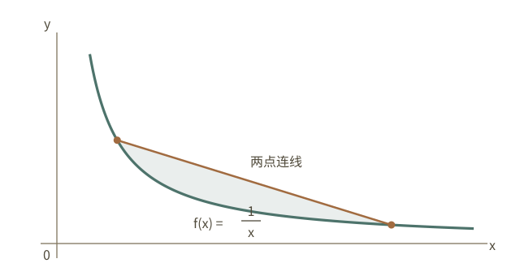
在凸函数的定义中取 \displaystyle t=\frac12，便得到
f\!\left(\frac{a+b}{2}\right)\le\frac{f(a)+f(b)}2.
这条中点关系，把图像的形态与中学里熟悉的不等式联系起来：
平方和不等式。取凸函数 \displaystyle f(x)=x^2，对任意实数 \displaystyle a,b，得到
(a+b)^2\le2(a^2+b^2).
基本不等式。取凸函数 \displaystyle f(x)=-\ln x，对 \displaystyle a,b>0，得到
\sqrt{ab}\le\frac{a+b}{2}.
倒数不等式。取 \displaystyle x>0 上的凸函数 \displaystyle f(x)=\frac1x，对 \displaystyle a,b>0，得到
\frac1a+\frac1b\ge\frac4{a+b}.
这三个不等式都在 \displaystyle a=b 时取等号。过去从代数运算中得到的结论，现在也可以从函数的形态来理解。
第八节 · Boss 战—穿越结界
掌握了导数运算，我们分析函数的本领又上了一个台阶。接下来，迎来本回的大 Boss：镜中人。他是悟空在结界中化出的一道分身，正等候天命人前来过招。
天命人站在结界外的 \displaystyle A 点，与结界幻境中 \displaystyle B 点的悟空遥遥对视。天命人迎面冲上去，想要近身还击，却在出手之前被悟空轻巧地躲开。接连尝试几次，结果都是如此。
天命人停下来思索：问题出在自己赶到得不够快，给了悟空闪避的时间。尤其进入结界后，脚步明显慢了下来。怎样选择路线，才能以最短的时间到达 \displaystyle B 点？
假设结界边界是一条直线，结界外天命人的速度为 \displaystyle v_1，结界内的速度为 \displaystyle v_2，且 \displaystyle v_1>v_2>0。选择不同的位置进入结界，会改变在结界内外行进的路程，从而影响总耗时。关键是找到边界上的点 \displaystyle P，使天命人从 \displaystyle A 到 \displaystyle B 的时间最短。
如下图，天命人沿 \displaystyle A\to P\to B 行进，两个角均相对于结界边界的法线测量。
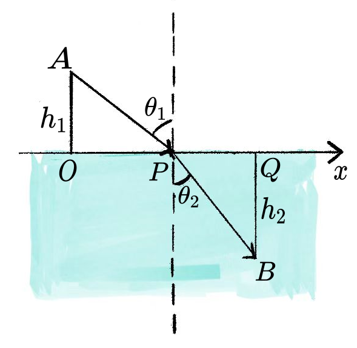
把结界边界设为横轴，取 \displaystyle A=(0,h_1)、\displaystyle B=(l,-h_2)、\displaystyle P=(x,0)，其中 \displaystyle h_1,h_2,l>0。图中的 \displaystyle O、\displaystyle Q 分别是 \displaystyle A、\displaystyle B 在边界上的垂足，\displaystyle OQ=l。
确定进入点 \displaystyle P 后，两种环境内都沿直线行进。移动 \displaystyle P，两段路程随之改变。由勾股定理，得到关于进入点位置 \displaystyle x 的耗时函数 \displaystyle T(x)：
T(x)=\frac{\sqrt{h_1^2+x^2}}{v_1} +\frac{\sqrt{h_2^2+(l-x)^2}}{v_2}.
计算导数
由四则运算和链式法则，
T'(x)=\frac{x}{v_1\sqrt{h_1^2+x^2}} -\frac{l-x}{v_2\sqrt{h_2^2+(l-x)^2}}.
确定最优进入点
再求一次导数，得到
\begin{aligned} T''(x)&=\frac{h_1^2}{v_1(h_1^2+x^2)^{\frac32}}\\ &\quad+\frac{h_2^2}{v_2[h_2^2+(l-x)^2]^{\frac32}}>0. \end{aligned}
所以 \displaystyle T 是凸函数。令 \displaystyle T'(x_*)=0，得到
\boxed{\frac{x_*}{v_1\sqrt{h_1^2+x_*^2}} =\frac{l-x_*}{v_2\sqrt{h_2^2+(l-x_*)^2}}}.
因为 \displaystyle T''(x_*)>0，\displaystyle x_* 是极小值点。凸函数的极小值就是全局最小值，因此 \displaystyle P_*=(x_*,0) 就是最优进入点，最快路线为 \displaystyle A\to P_*\to B。
根据图形，最快路线上的两个角满足
\sin\theta_1=\frac{x_*}{\sqrt{h_1^2+x_*^2}}, \qquad \sin\theta_2=\frac{l-x_*}{\sqrt{h_2^2+(l-x_*)^2}}.
将这两个比值代入极值点方程，得到
\boxed{\frac{\sin\theta_1}{v_1}=\frac{\sin\theta_2}{v_2}}
这正是光的折射定律（斯涅尔定律）。光从一种介质进入另一种介质时，两个角均相对于界面的法线测量。若 \displaystyle v_1>v_2，则 \displaystyle\theta_2<\theta_1，光的传播方向向法线偏折。
在这里两种均匀介质、平直界面的情形中，光的传播路线使总传播时间最短。这是费马原理在这里的体现：最快的路线，未必是路程最短的直线。
第九节 · 再战 Boss—梯度下降法
上一战中，我们要选择进入点 \displaystyle P=(x,0)，使从 \displaystyle A 到 \displaystyle B 的总耗时最短。需要研究的耗时函数是
T(x)=\frac{\sqrt{h_1^2+x^2}}{v_1} +\frac{\sqrt{h_2^2+(l-x)^2}}{v_2}.
最优进入点满足的极值点方程 \displaystyle T'(x)=0 可写为：
\frac{x}{v_1\sqrt{h_1^2+x^2}} -\frac{l-x}{v_2\sqrt{h_2^2+(l-x)^2}}=0.
这个方程含有根式，不容易直接把最优进入点算出来。
这一战，我们引入终极大杀器——计算机，通过数值计算来寻找问题的解，这就是数值求解。然而，即使计算机的计算能力非常强大，也需要采用适合问题的算法，才能得到满足精度要求的近似解。这里介绍一种广泛用于求解函数最小值问题的算法——梯度下降法。
要寻找函数 \displaystyle f(x) 的最小值，可以把函数图像想象成山坡，把函数值看作所在位置的高度。一位盲人下山时，看不到整座山的形状，只能感受脚下的坡度：朝下坡方向走一小步，再重新判断坡度，如此反复，逐步走向低处。
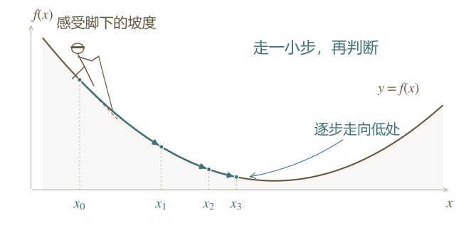
导数给出了当前位置的坡度。 因而：
- 若 \displaystyle f'(x)>0，曲线向右上升，就向左调整。
- 若 \displaystyle f'(x)<0，曲线向右下降，就向右调整。
两种情况都可以用同一条公式表示。
选择初始位置 \displaystyle x_0 和步长 \displaystyle\eta>0，反复计算
\boxed{x_{k+1}=x_k-\eta f'(x_k).}
负号决定下降方向，步长决定每次移动多远。 每到一个新位置，都重新计算那里的导数，再决定下一步。对于我们考虑的一元函数，导数就是梯度，因此得名梯度下降法。
回到最快路线问题，取 \displaystyle f(x)=T(x)，就可以用同一条迭代公式调整进入点。
下面通过动画，演示梯度下降法如何帮助我们找到上述问题的解 \displaystyle x_*。拖动边界上的 \displaystyle P，或调节“起点 P（\displaystyle x_0）”滑块选择初始位置，再点击“单步演示”。观察一次调整的三个阶段：看当前切线 → 沿下降方向移动 → 在新位置重新求导。再点击“连续迭代”，看看进入点与总耗时怎样变化。
下面三组都从 \displaystyle x_0=1.2 出发，使用同一个耗时函数与同一条迭代公式，只改变步长。点击“播放对比”，也可以逐步查看或拖动迭代次数。
- 步长较小：进入点缓慢靠近最优位置。
- 步长合适：较快接近最优位置，导数逐渐趋近于零。
- 步长过大：可能在最优点两侧反复跳动，耗时还可能回升。
实际计算时，可以在导数的绝对值足够小时停止，也会设定迭代次数的上限。达到次数上限并不保证结果足够精确，还要检查是否满足精度要求。
步长是否合适取决于具体函数。这里能看到的是振荡；对某些其他函数，步长过大还可能使迭代不断远离最优点，称为发散。
在这个例子中，我们调整进入点 \displaystyle x，让耗时 \displaystyle T(x) 变小。机器学习也常常需要寻找某个衡量预测误差的损失函数的极小值。不断调整模型参数、让损失减小的过程，称为训练，其中也会用到梯度下降法；控制每次更新幅度的步长，通常称为学习率。
对于具有大量参数的神经网络，一个更大的困难在于梯度的计算。这里的梯度相当于一元函数导数在多参数情形下的推广，记录了各个参数改变时损失函数的变化率。
辛顿等人在 1986 年的研究中，展示了如何利用反向传播算法（backpropagation）训练多层神经网络。这种算法利用神经网络的连接结构，从输出端向输入端反向应用链式法则，并复用中间计算结果，从而高效地计算梯度。反向传播负责计算梯度，梯度下降法再据此更新参数。
为了表彰在利用人工神经网络实现机器学习方面作出的奠基性贡献，2024 年诺贝尔物理学奖颁给了约翰·霍普菲尔德（John Hopfield）和杰弗里·辛顿（Geoffrey Hinton）。
Photo: Clément Morin © Nobel Prize Outreach
官方图库与使用许可
第十节 · 回望来路
这一回，我们把函数图像看作起伏的山路。为了刻画函数的变化，我们运用极限给出了导数的定义，再用它研究函数的增减变化、极值与最值。
在某一点 \displaystyle x_0 处，导数描述了函数值的微小改变量 \displaystyle dy 随自变量的微小改变量 \displaystyle dx 变化的线性关系，即
dy=f'(x_0)\,dx.
形象地说，\displaystyle dx 是“桃”，\displaystyle dy 是“李”，导数是它们之间的比例系数。
穿越结界这一战，体现了在导数的加持下，我们对函数这一数学对象更强大的分析与处理能力。这一战，我们一方面推导出了光的折射定律，另一方面学会了用梯度下降法寻找最优解。
极限的定义
导数的定义
基本公式与四则运算
链式法则
高阶导数
单调性
极值与最值
凸函数与凹函数
梯度下降法
（数值求解）